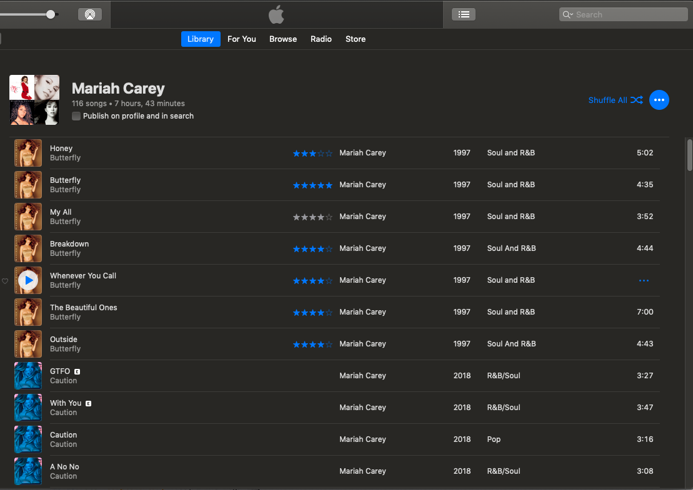

Mariah The Vocalist
I still remember the very first time I heard Mariah Carey sing. I was watching music videos and “Vision of Love” came on. I sat there watching the tv in complete awe. Her voice reminded me of birds singing. It still does. When When she sings, I get a feeling of peace and calmness. When I'm having a bad day I turn on my Mariah Carey playlist and it helps my mood tremendously.
I own 14 Mariah Carey albums, totalling 139 songs.

I also have a playlist of selected Mariah Carey songs, totalling almost 8 hours of continous music.

Mariah Carey Wiki by Fandom, lists all of her songs.
I'm also a huge karoake fan and wish my YouTube karaoke playlist had more Mariah Carey material.
Mariah The Performer
Some of my friends compare Mariah Carey to newer and younger artists, like Beyoncé. I agree that Mariah Carey's concerts do not rival that of Lady Gaga or Britney Spears as far as theatrics are concerned. Mariah doesn't dance much and unlike the artists stated above, she only uses a small number of dancers during her perfomances. However, her vocals are so strong that she doesn't need all of the extras to be great. Even after about 30 years in the business, she's still amazing!

I attended the Caution World Tour earlier this year and had a wonderful time. My sister came from Phoenix and went with me. She's not a forever fan like I am, but she loved the concert, too.
On the next page you can find clips from the concert. They don't do her any justice as they were recorded using my cellphone, but I'm sharing with you anyway. Enjoy!
Mariah the Businesswoman
I know from watching interviews with and about Mariah Carey, that she is very hands on when it comes to creating her music. She writes a lot of her lyrics and she's very particular about her sound. But that's not all she does.
Mariah's Perfumes
Did you know that Mariah Carey has a fragrance line? I started collecting her perfumes a few years ago. The fragrances have the cutest bottles and are quite affordable. I collected the purple bottle, M by Mariah Carey, even though I didn't care for it's smell. Her top three scents are:
- M by Mariah Carey Luscious Pink
- Mariah Carey Ultra Pink
- Mariah Carey Forever